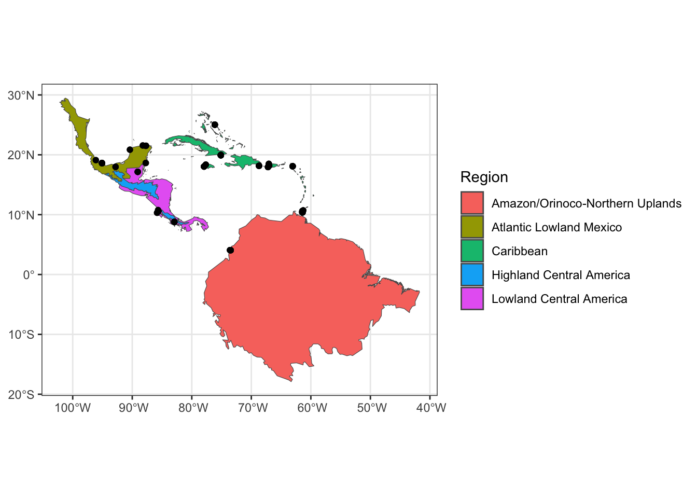

Chapter 3 Define breeding and nonbreeding nodes
The first step of creating a migratory network is to spatially define the nodes (i.e. populations) that make up the sampled portions of the breeding and nonbreeding range. This can either be done with vector data for discrete spatial boundaries of nodes or raster data for a continuous surface probabilistic membership of geographic cells to a node (e.g., population genetic structure of a genoscape (Ruegg et al. 2020)).
3.1 Vector data
Vector data can define nodes by representing geographic boundaries such as political borders or biogeographic regions. In mignette, we provide data for conservation regions of the Western Hemisphere that integrate geopolitical boundaries and ecoregions.
# SpatVector from terra package
regions_file <- system.file("extdata", "conservation_regions.Rds", package = "mignette")
# read in file as SpatVector
conservation_regions <- terra::vect(regions_file)
terra::plot(conservation_regions, col=rainbow(10))
For defining a node, we are only interested in regions that we have data. It’s straightforward with the spatial functions from terra to determine the sampled regions. Here, we find the conservation regions for which we have sampled American Redstart data from the nonbreeding range.
# create SpatVector points object from Redstart lat/lon sampling data
nonbreeding_coords <- terra::vect(mignette::amre_nonbreeding_data,
geom=c("Lon", "Lat"),
crs = "EPSG:4326")
# find spatial intersection of points with conservation regions
region.ids <- conservation_regions %>%
as_tibble() %>%
select(Region) %>%
add_column("Index" = 1:nrow(conservation_regions))
sampled_conservation_regions <- terra::nearby(nonbreeding_coords,
conservation_regions,
centroids = FALSE,
k=1) %>%
as_tibble() %>%
left_join(region.ids, by = c("k1" = "Index"))
# count the number of sampled individuals associated with each conservation region
sampled_table <- table(sampled_conservation_regions$Region)
sampled_table##
## Amazon/Orinoco-Northern Uplands Atlantic Lowland Mexico
## 21 23
## Caribbean Highland Central America
## 69 5
## Lowland Central America
## 17Downstream in the workflow, we need sufficiently sampling of individuals in (or inference to) a node. So, we’ll only retain the conservation regions with more than 3 samples…here, that is all of them:
# retain conservation region names with more than 3 samples
retained_regions <- names(sampled_table[sampled_table > 3])
retained_regions## [1] "Amazon/Orinoco-Northern Uplands" "Atlantic Lowland Mexico"
## [3] "Caribbean" "Highland Central America"
## [5] "Lowland Central America"Thus, we’ve identified the 5 nonbreeding nodes for the American Redstart data: Amazon/Orinoco-Northern Uplands (AONU), Atlantic Lowland Mexico (ALM), Caribbean (CAR), Highland Central America (HCA), and Lowland Central America (LCA). We can plot these conservation regions along with the corresponding sampling points.
# subset conservation regions file by retained regions
conservation_regions_subset <- terra::subset(conservation_regions,
conservation_regions$Region %in% retained_regions)
# plot
ggplot2::ggplot() +
tidyterra::geom_spatvector(data = conservation_regions_subset, ggplot2::aes(fill = Region)) +
tidyterra::geom_spatvector(data = nonbreeding_coords) +
ggplot2::theme_bw()
3.2 Raster data
Raster data is used when populations are defined by a continuous surface of probabilities of membership to a population. In the example here, we have population genetic data from the American Redstart that define breeding populations (i.e., American Redstart genoscape, (DeSaix et al. 2023)). We have defined these nodes as Western Boreal (WB), Basin Rockies (BR), Northern Temperate (NT), Southern Temperate (ST) and Maritime Provinces (MP). Raster data for nodes are used in mignette to get node abundance that is scaled by the raster probabilities of population membership, as shown in the next section.
amre_genoscape_file <- system.file("extdata", "amre_genoscape.Rds", package = "mignette")
amre_genoscape <- terra::rast(amre_genoscape_file)
terra::plot(amre_genoscape)
While it is outside the scope of mignette to perform the requisite population genetics analyses for producing these rasters, users with genetic data and expertise with genetic clustering analyses may be interested in the Supplementary information that provide additional information and code.